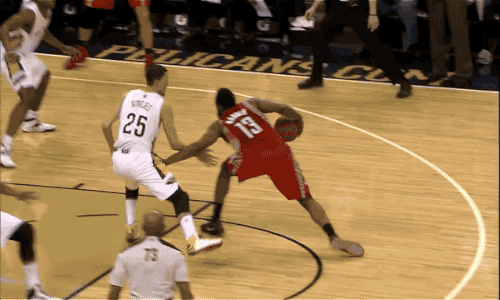
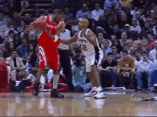
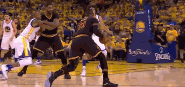

后撤步投篮
后撤步投篮是另一项常用的篮球进攻技术。它可以帮助球员在防守者靠近时创造空间投篮。这需要良好的平衡感和协调能力。
后撤步，顾名思义，就是后撤一步后投篮，一般是以前进或静止姿势开始， 在进行运球的过程中，向防守队员的相反或相侧的方向跨步， 并顺势起跳投篮，用距离差来阻止防守队员的干扰。
撤步的步幅和步速，撤步的方向和后续滑步的步频，以及身体重心的控制。撤步的步幅要大，步速要快， 以达到领先强占位置（撤步要强在对方跨出的前脚的稍前方），控制并破坏对方突破路线的目的。
